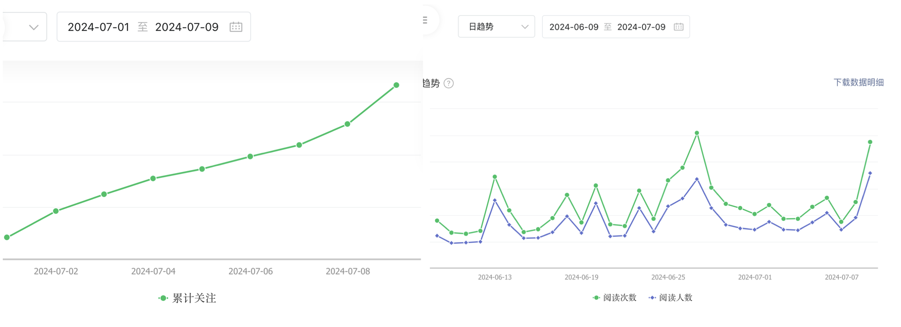

Introduction
我创建bio llbug这个公众号也一年多了，从最初的几篇文章到现在，已经有了50多篇长文，粉丝量也逐渐上升。
有时候想具体看看自己的粉丝量变化趋势，或者想看看自己哪些文章受欢迎等，需要到微信公众号平台的数据板块查看：
其实微信公众号平台的数据板块的图表做的都很好，但是基本所有的模块只能看至多90天的信息，再多的话就要手动选择时间段。它又不支持一键导出数据，只能手动每90天下载一个，再想办法整合在一起，很烦。
我尝试用爬虫工具，奈何技艺不精，没有很好的实现。去github上找了一圈，大佬们搭的平台环境复杂，我也没有成功复刻。另外一些号称可以分析各种公众号数据的软件插件少不了收费。
但我的目标并不是很复杂，只是几项简单数据，最后还是用一个笨方法，模拟人工打开浏览器下载表格操作，一步一步获取数据。
下列步骤都是用R语言实现的，把所有代码拷贝到一个.R文件中，放在合适路径，设置好token和浏览器默认下载路径，运行即可。第一次会把从设置好的ori_begin_date开始的所有粉丝数据都下载下来，之后运行代码只会更新新增的数据。
下载
思路：利用微信公众号提供的表格下载链接，模拟人工下载，获取数据。更改下载链接中的时间区间，获取不同时间段每90天一次的链接。
直接通过链接下载会提示需要登录，下载下来的好像是微信前端的JS代码，哈哈哈。所以我利用utils::browseURL打开默认浏览器，自动下载表格。
注意这里的文章数据只能统计文章发表7天内的数据，跟真实的最终阅读量还是有差距的。有其他需要下载的数据，可以尝试修改链接中的参数。
|
|
合并数据
思路：刚刚通过循环我们已经下载下来的很多文件，看起来都是Excel格式的，需要用readxl包读取，然后合并到一个数据框中。
实际上粉丝数据下下来的’user analysis.xls’文件是错误的，无法正常读取，最后用XML::readHTMLTable侥幸成功。
我们把所有数据整合起来保存表格，并删除下载的中间文件。注意保存的wechat_article_analysis.csv和wechat_user_analysis.csv文件名不能改也不要删，因为下一次运行时会读取这个数据，来判断增量下载哪些部分。
|
|
画图
思路：简单画一个折线图，看看一年多来的粉丝增长趋势。找一下增量最多的几天，然后找到对应那几天最近发表的文章标题，画在折线图上。
|
|
终于大功告成了，以后只需要重新运行这个脚本，就可以获取更新的微信公众号数据了。话说这个方法真笨呀，要是我爬虫用的好就不需要这么麻烦了。